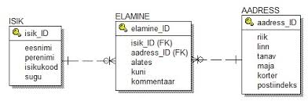
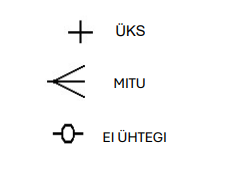

ERD ehk Entity-Relationship Diagram (Olemidiagramm). See on kõige laiemalt levinud metoodika andmemudelite koostamiseks ja kirjelduse esitamiseks.
Andmebaasi luuakse samm-sammult. Esmalt koostatakse andmemudel, mida kirjeldatakse nii
detailselt, kui vaja on. Järgmiseks genereeritakse mudeli põhjal SQL-käsud (Structured
Query Language), mille abil luuakse füüsiline andmebaas. Kui aja jooksul ilmneb vajadus
andmebaasi struktuuri muuta, tehakse vastavad parandused või täiendused ERD-mudelisse
ning selle alusel koostatakse uued SQL-käsud, millega viiakse andmebaasi struktuur
mudeliga vastavusse.
ERD peamised osad on olemid (entity) ja olemite vahelised seosed. Iga olemi sisemine
ülesehitus koosneb atribuutidest. Seose kirjeldamisel tuuakse välja nende olemite vastavad
atribuutide paarid, mille kaudu seos tekib ja mis määravad, kuidas kaks olemit omavahel
seotud on. Seos saab eksisteerida alati kas kahe erineva olemi vahel või ka olemi ja tema
enda vahel. Kui seos eksisteerib olemi ja enda vahel moodustab see suletud tsükli.
Olemiskeemi näidis

Olemiskeemis kasutatavad tingmärgid:
